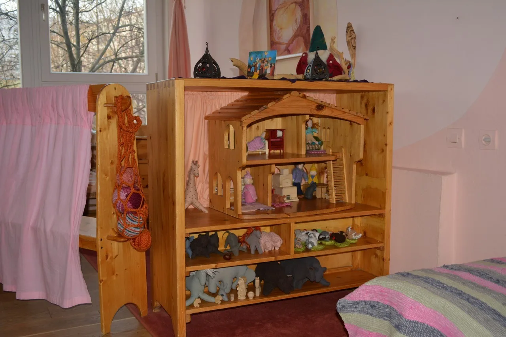

Детский сад «Алёнушка» в Москве
С 1990 года растим детей по вальдорфской программе: свободная игра, сказка, музыка, живой ритм дня и большая дружная семья из двух разновозрастных групп.
Почему родители выбирают «Алёнушка»
С 1990 года
Больше 35 лет работаем в Строгино по вальдорфской педагогике.
Программа «Берёзка»
Вальдорфская программа дошкольного образования, по ФГОС ДО.
Как большая семья
Две разновозрастные группы: младшие учатся у старших, старшие заботятся о младших.
Живой ритм дня
Свободная игра, творчество, музыка, сказка и прогулки — каждый день в одном ритме.
Четыре приёма пищи
Завтрак, второй завтрак, обед и полдник по утверждённому десятидневному меню.
Охрана и медкабинет
Круглосуточная охрана, тревожная кнопка, видеонаблюдение и свой медицинский кабинет.

Детский сад «Алёнушка» — большая дружная семья
Детский сад «Алёнушка» основан в 1990 году и работает по программе вальдорфского детского сада. Здесь никогда не оставят малыша без внимания: ребёнок всегда занят делом по своему желанию, а воспитатели опираются на его природную способность к подражанию. Главное для нас — атмосфера любви, доверия и уважения к личности ребёнка.
Приходите в гости вместе с ребёнком
Москва, ул. Кулакова, д. 3, корп. 2 · м. «Строгино»